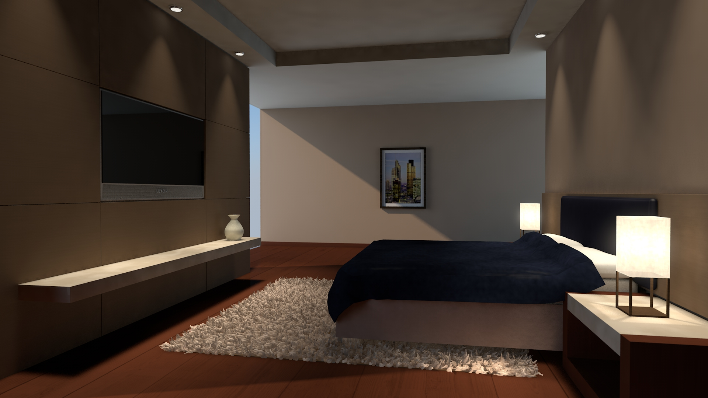
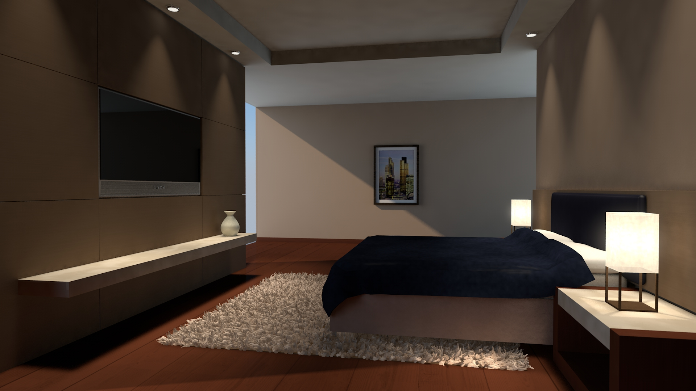

In a few courses and projects I have created 3D models using Cinema4D. At the beginning I tried to learn 3D-modelling by myself, but later I took a course in the 3rd Semester, which was all about the development of 3D-objects. Now I have more than basic knowledge and I can visualize project ideas and/or other very well.
You can see other versions of some pictures by moving the mouse over them.


 
